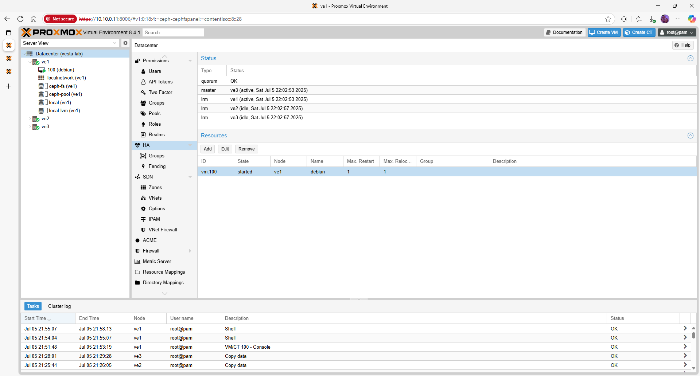

Proxmox VE 8.4.1 – High Availability (HA)
High Availability allows critical virtual machines to restart automatically on another node if a host fails. This guide assumes you have a three‑node cluster and shared storage (Ceph RBD or CephFS) configured.
Quick‑view overview
In a Proxmox VE HA cluster, a Cluster Resource Manager monitors the health of nodes and starts HA‑enabled services on another node when a failure is detected. Fencing (hardware watchdogs) is recommended for production but optional in a lab environment.
Prerequisites
- A Proxmox cluster with at least 3 nodes and quorum (see Cluster Setup).
- Shared storage (e.g. Ceph RBD, CephFS) so VMs can run on any node.
- Time synchronization across all nodes.
- Optional: a fencing/watchdog device for reliable node isolation.
Step 1 – Verify Cluster Status
Ensure the cluster is healthy before enabling HA:
pvecm status
The command should show Quorate: Yes and all nodes listed. Resolve any networking or quorum issues before proceeding.
Step 2 – Enable the HA Manager Services
The HA agent (pve-ha-crm) and local resource manager (pve-ha-lrm) must be running on all nodes. Check their status and enable them if necessary:
systemctl status pve-ha-lrm
systemctl status pve-ha-crm
systemctl enable --now pve-ha-lrm
systemctl enable --now pve-ha-crm
These services coordinate failover actions and track which node owns each HA resource.
Step 3 – Mark VMs or Containers as HA‑Managed
Only VMs or containers flagged for HA will be automatically restarted. You can configure HA either via the GUI or the CLI.
CLI
Add a VM with ID 100 to HA management:
ha-manager add vm:100
List HA‑managed services:
ha-manager status
GUI
Navigate to Datacenter → HA and click Add. Select the VM or container and set the desired Group and Failover Mode. Groups define which nodes are eligible to run the resource. The most common mode is migrate, which starts the VM on another node.
| Menu path | Action | Purpose |
|---|---|---|
| Datacenter → HA → Add | Choose VM/LXC ID, select group and failover settings | Enable HA management for a resource |
| Datacenter → HA → Groups | Create groups of nodes | Control where HA resources may run |
| Datacenter → HA → Status | View current state of HA resources | Monitor failover and recovery operations |
The screenshot below shows the HA status page with one VM registered for high availability:

Step 4 – Test HA Failover
To verify HA, simulate a node failure and watch the VM automatically start on another node. In a lab, the simplest test is to stop the cluster stack on one node:
systemctl stop pve-cluster
Alternatively, reboot the node or pull its network cable (in a controlled environment). Monitor ha-manager status and the web GUI to see the VM migrate and restart.
Validation & Smoke Tests
- Service Migration – When a node goes offline, HA‑enabled VMs should restart on a remaining node within a few minutes.
- Group Constraints – If a resource is restricted to a group, verify that it does not start on non‑group nodes.
- State Recovery – After the failed node returns, the VM continues to run on its new host. Migration back occurs only if configured.
Troubleshooting
- If HA resources remain stopped after a failure, ensure the HA services (
pve-ha-crmandpve-ha-lrm) are running on all nodes. - Use
ha-manager crm-logto view recent cluster events and identify why a resource was not restarted. - For production, implement STONITH/fencing devices so that failed nodes are powered off and cannot corrupt shared storage.
Next steps / Links
HA ensures service continuity but does not replace backups. To protect your data, integrate Proxmox Backup Server or another backup solution. Return to Ceph Storage for advanced tuning, or explore other services in the Vesta Lab portfolio.